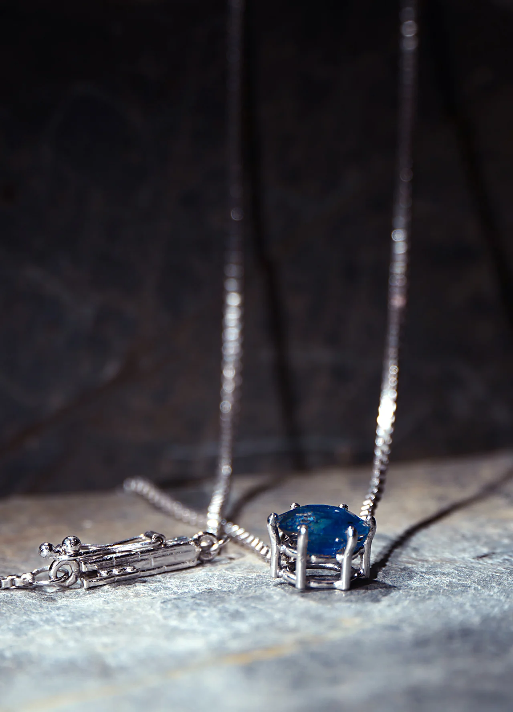

Die Auswahl von Feingold Vogel
Saphir. Gold.
Jedes Detail zählt.
Ein Einblick in Dietmars Schmuckauswahl: ein natürlicher blauer Saphir in 750er Gold. Entdecken Sie Originalaufnahmen, Eigenschaften und die offene Fassung. Der Onlineshop ist in Vorbereitung.


Eine Kette. Viele Perspektiven.
1,44 Karat.
Offen gefasst.
Ein Saphir von 1,44 Karat, gefasst in 750er Gold. Die offene Fassung gibt den Blick auf den Stein frei. Laut Katalog gehören ein IGI-Bericht und ein Schmucketui dazu.
Das Stück und seine DetailsPersönlich ausgewählt. Persönlich beraten.
Ihre Frage zum Schmuck.
Dietmar gibt Ihnen Auskunft zur Kette, ihrer Verfügbarkeit und zum geplanten Shop.
Dietmar kontaktierenSie möchten eigenen Schmuck verkaufen? Zum Ankauf bei Nachlassgold